W1_list <<
Previous Next >> 程式語言
W2
W2 學員建立 Github, Gitlab, Heroku 與 Authorea 帳號
W2 學員利用 Github Pages 與 CMSiMDE 建立個人網頁
W2 學員學習如何利用 Git 與 Github 維護個人網頁
下載可攜 Python 套件
在電腦輔助設計室可以利用 IPv6 協定至 http://a.kmol.info:88 下載課程相關檔案.
下載 fall2020_cp.7z 壓縮檔案之後, 直接利用 7zip 解開壓縮, 然後在 64 位元 Windows 10 啟動 start.bat, 就可以直接在 SciTE 編輯器中解譯 Python 程式, 而且可以利用 pip 工具安裝所需的 Python 模組之後, 接下來必須:
- 了解如何自己建立與 fall2020_cp.7z 相同功能的可攜 Python 套件
- 了解如何在可攜套件中加入 portablegit, sharex, putty 等工具, 並學習如何使用
- 了解如何在 github 以 submodule (或不以 submodule) 建立 cmsimde 倉儲
- 了解如何在近端維護 CMSiMDE 內容管理系統
for 重複迴圈的應用
接下來要在頁面中插入 11 張圖, 希望寬度為 600 且 img 屬性加入 add_border.
第一張圖以手動方式插入後, 手動進入 html 編輯, 加入 class="add_border" 屬性後, 取得插入圖檔的 html 如下:
<p><img class="add_border" height="342" src="./../images/1_cp_git_and_cmsimde.png" width="600"></p>
隨後的 10 張圖希望利用 Python 迴圈產生後再從 html 編輯插入.
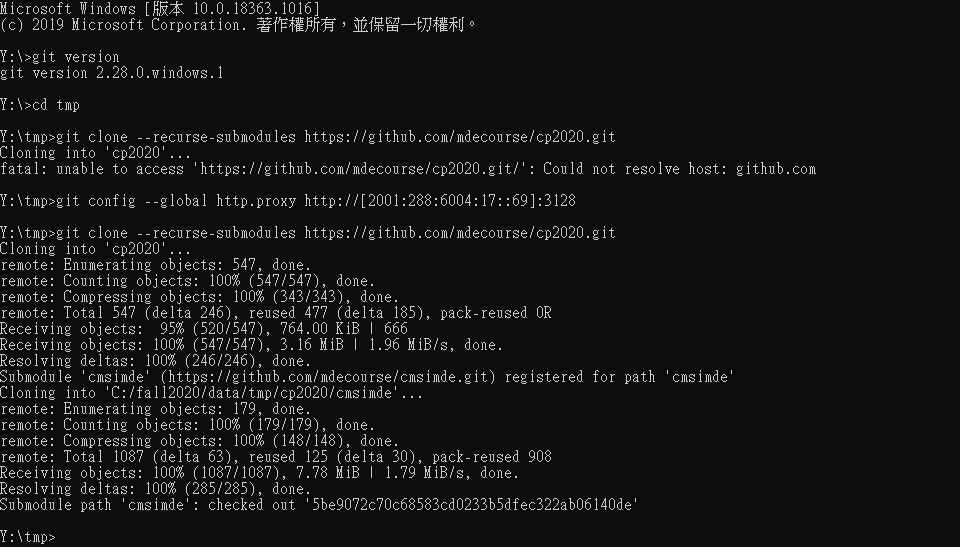
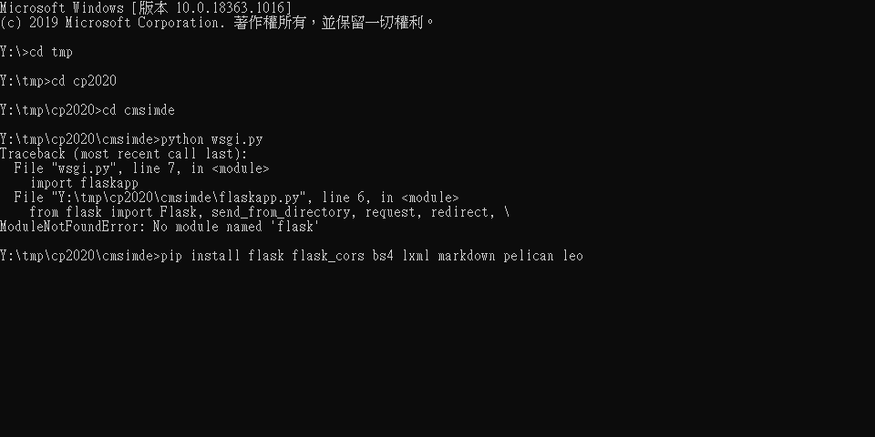
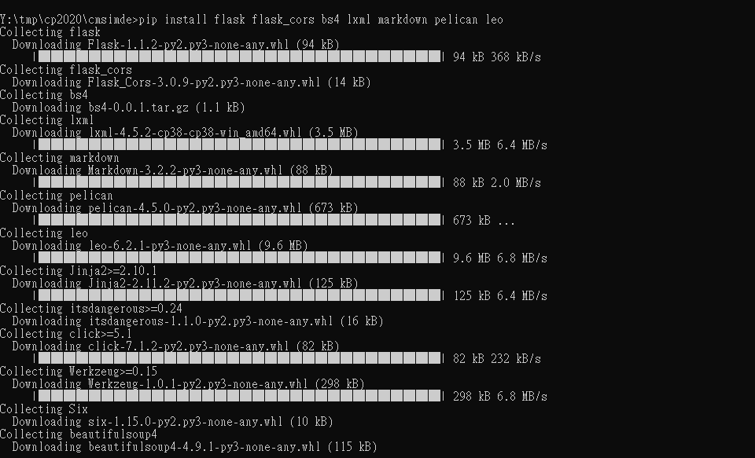
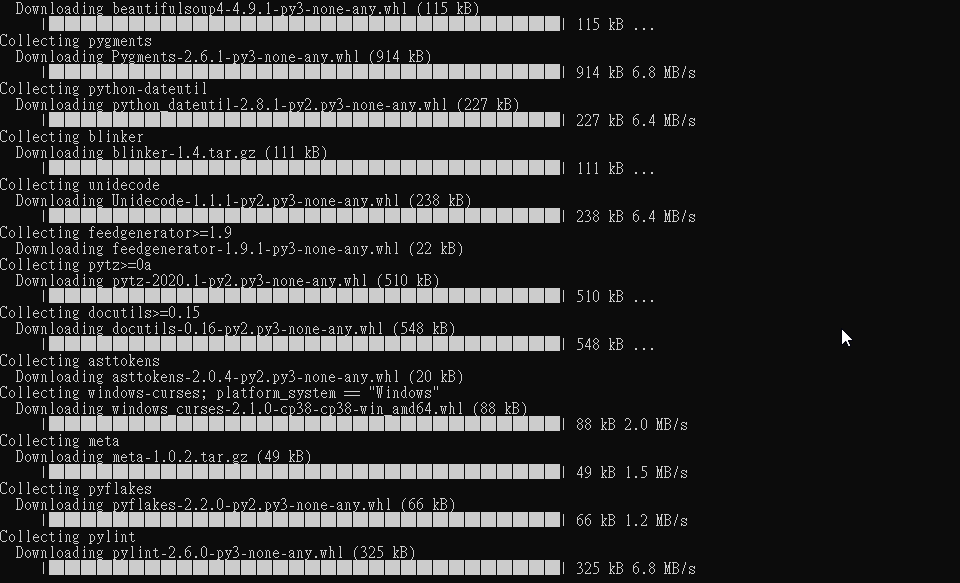
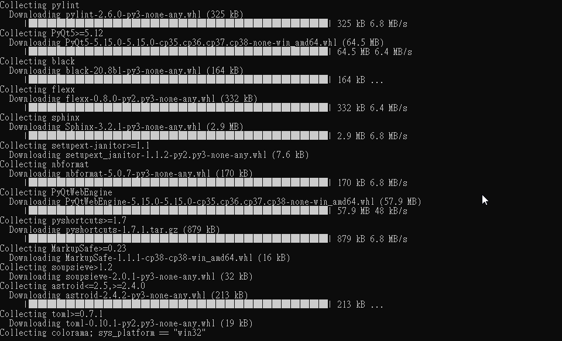
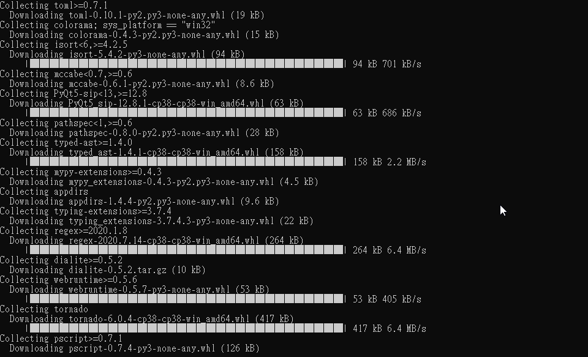
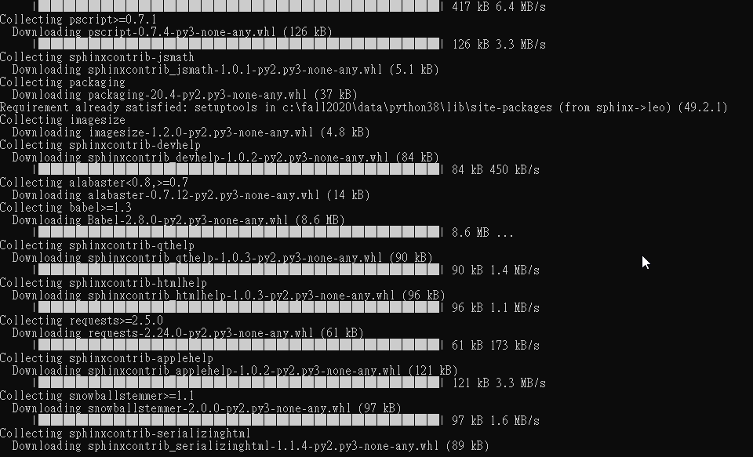
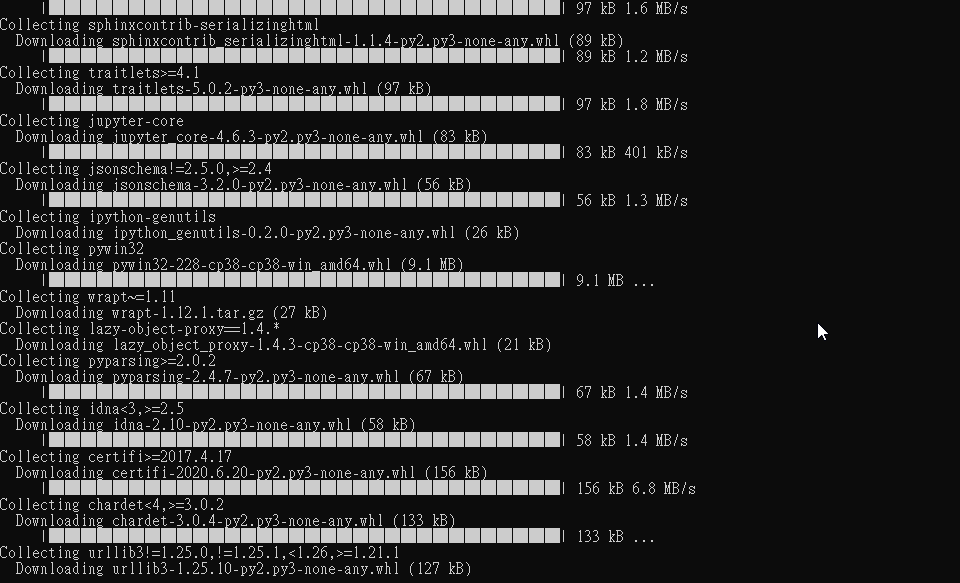
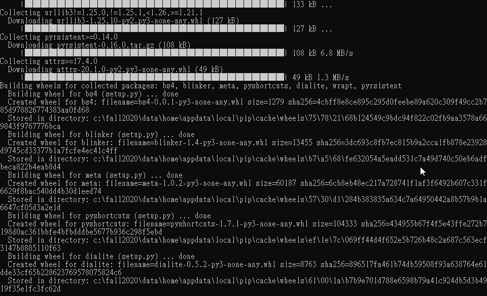
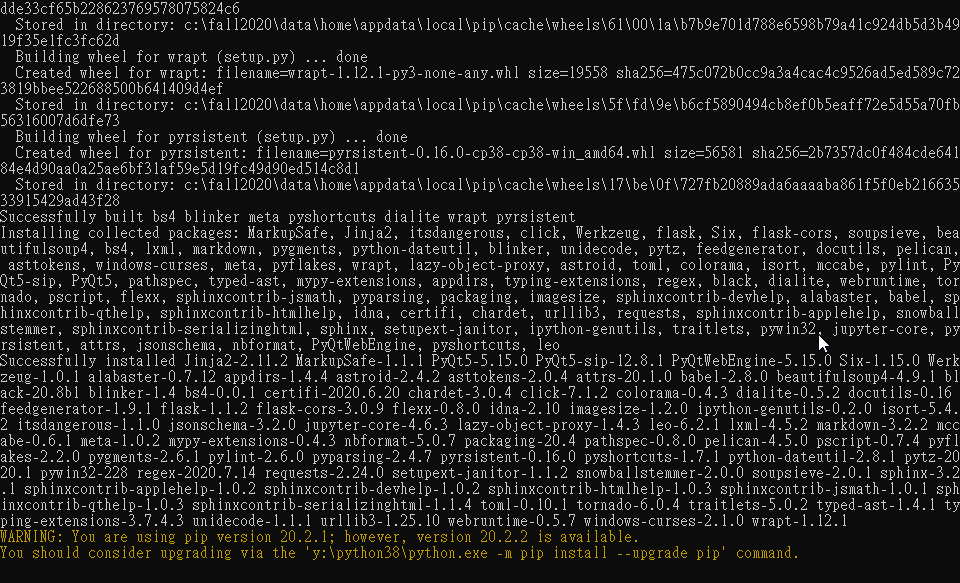
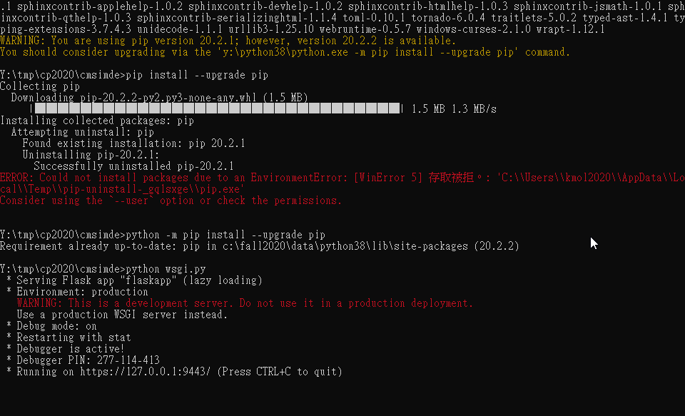
上述利用迴圈插入具有規律的字串程式碼為:
'''
參考用的 html 字串為
<p><img class="add_border" height="342" src="./../images/1_cp_git_and_cmsimde.png" width="600"></p>
'''
firstSegment = '''<p><img class="add_border" height="342" src="./../images/'''
secondSegment = '''_cp_git_and_cmsimde.png" width="600"></p>'''
for i in range(2, 12):
print(firstSegment + str(i) + secondSegment)
其於 SciTE 編輯器執行畫面:
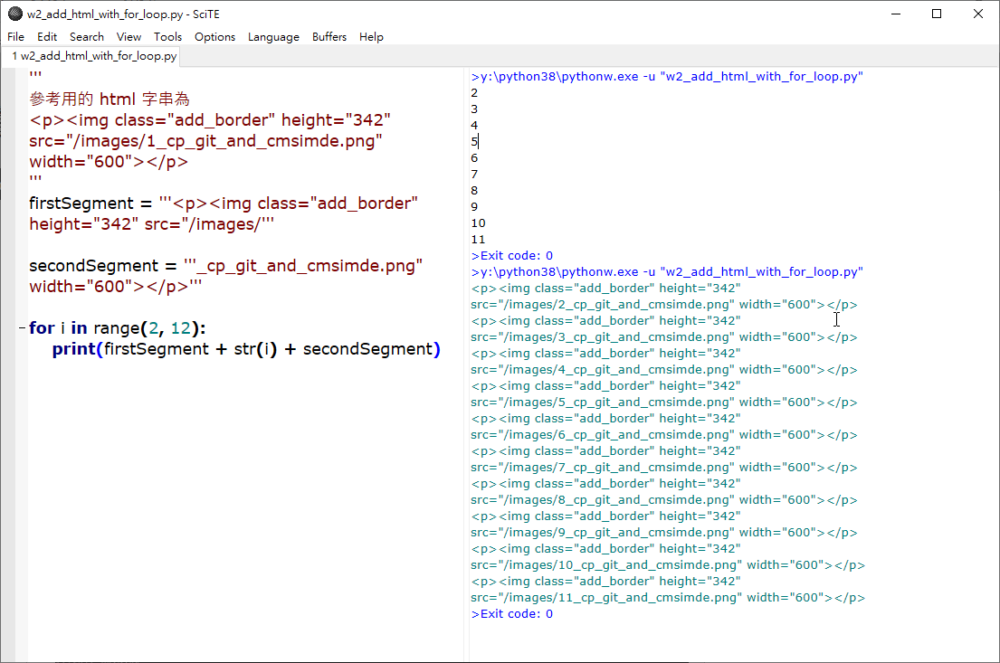
請問, 當成功以 https://localhost:9443 對 CMSiMDE 動態網站連線時出現以下畫面, 代表甚麼意思?
當我們成功完成 CMSiMDE 動態網站內容, 且利用 generate_pages 按鈕轉為靜態網站資料後, 要利用 git 指令新增提交退送時, 碰到以下問題:
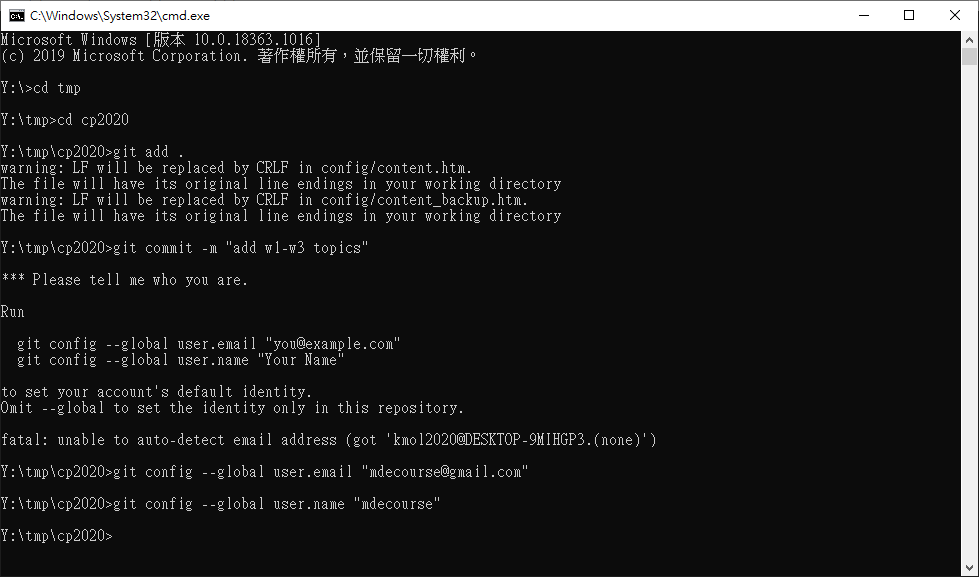
接著配合畫面中的提示, 利用 git config 指令操作結束後, 接著嘗試以 git push 將改版資料推送到遠端, 結果又出現下列畫面:
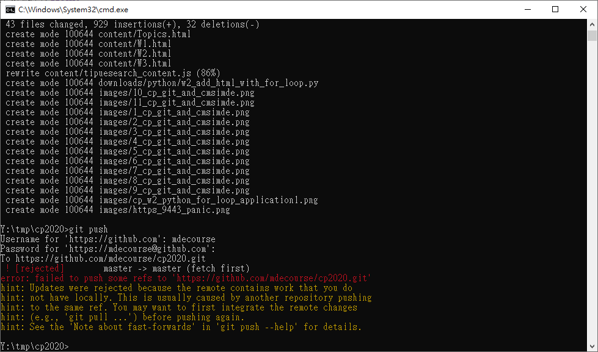
根據提示, 以 git pull 拉下遠端與近端的差異資料後, 又出現下列畫面, 因為提示中拉下的資料與 Leo Editor 有關, 因此在命令列視窗中輸入 leo, 試著開啟 Leo Editor, 結果出現的小視窗無論如何操作都會落入重複迴圈, 於是在 y:\home\.leo 目錄中, 以 SciTE 編輯器建立一個 .leoID.txt 檔案, 內容為任何字串, 然後以 stop.bat 關閉可攜系統之後, 再以 start.bat 開啟系統, 終於能夠開啟 Leo Editor, 並利用 git push 將近端資料成功送到 github.
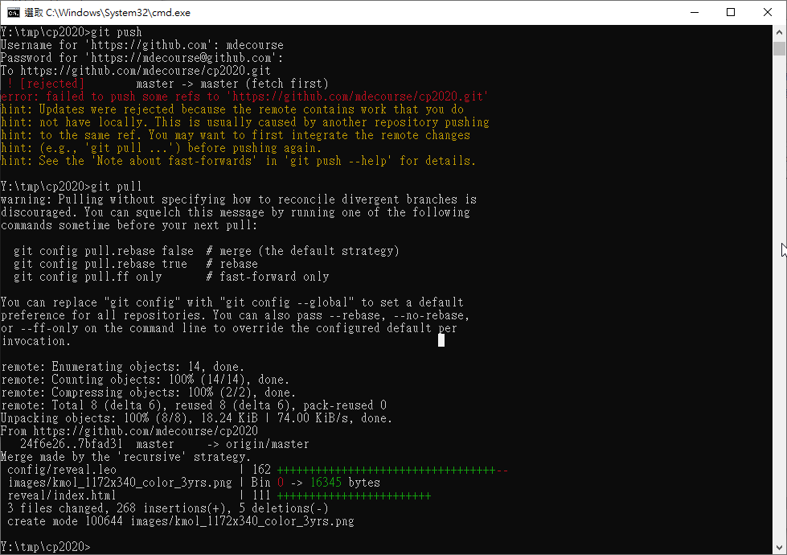
- 請問, git config --global 指令執行成功後, 這些設定會存在哪裡?
- 另外假如我們不是使用可攜程式套件而是使用電腦輔助設計室中電腦所安裝的 Python 以及 git, 但是卻想在其他用戶所存放的 git config identity 中, 提交屬於自己帳號下的 comment, 該如何操作?
- 上述的流程設定, 必須每一次推送時都輸入 github 所登錄的帳號與密碼, 假如在協同者面前輸入帳號密碼時, 其他人都一直盯著我的鍵盤看, 該如何是好?
- 上述在 git push 之前需要 git pull 的原因是甚麼?
- 上述 Leo Editor 啟動時, 為何會進入重複迴圈?
- CMSiMDE 是用甚麼程式語言建立的?
- CMSiMDE 為什麼有動態網站與靜態網站的設計?
- 假如每一班都配給一台 Ubuntu 20.04 的伺服器, 可以配置與 Windows 10 相同的程式環境嗎? 假如我使用 MacBook 筆電也可以嗎?
W1_list <<
Previous Next >> 程式語言